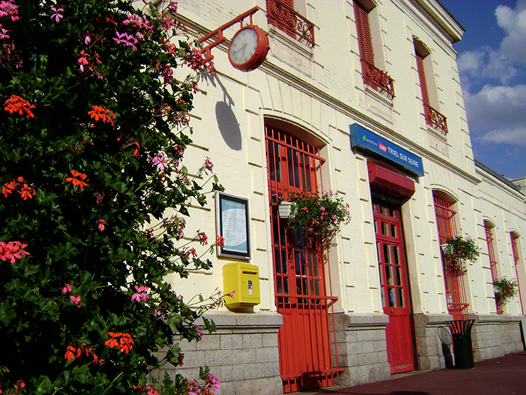
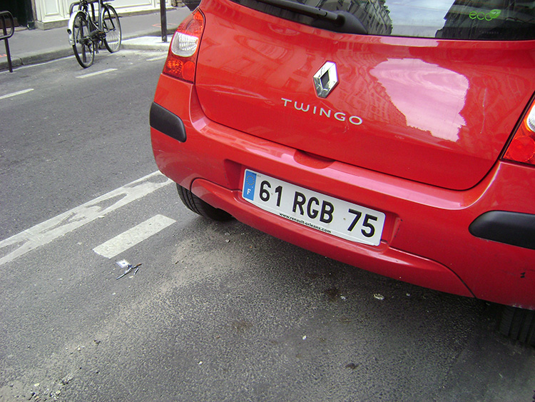
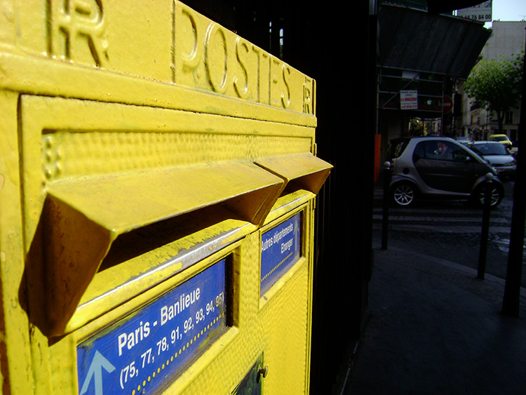

先日、パリ・サン・ラザール駅で

先日、パリ・サン・ラザール駅で電車待ちをしている時に、とある衣料量販店の大きな広告が目にとまりました。その広告は家族向けバカンス時の適当服の宣伝で、二パターンありました。
一つ目のパターンは、白人三十代半ばの母親とまだ小学校に上がる位前の娘で、どこかのバカンス地の浜辺の木陰で、ニコニコのバカンスの余裕顔で、海岸の方を眺めているというような感じです。母親は十四・九十九ユーロの白いチュニックブラウスを着用しており、娘の方は四・五十ユーロの白い肩ひもブラウスを涼しげに着用していました。
一方、二つ目のパターンは、先ほどの家族男性陣編というような設定で、その母親と同じ年代の父親と小学校低学年位の息子が手をつないで波打ち際ではしゃいでいるというようなモノです。その父親が着用しているのは水色のTシャツで、六・九十九ユーロと値段が表示されており、息子の方もやはり同じような水色系で、妹と合わせたかのように袖無しのタンクトップで、三・九十九ユーロの値段が付けられていました。
あれれ？女性陣の方が値段が高いぞ？

「あれれ？女性陣の方が値段が高いぞ？なんでなんだろう？」と疑問が頭を駆け巡り始めました。こ
の値段の設定は、やはりこういった買い物は女性陣の領域のような気がするので、その女性陣がお買い物しやすいような、ほんのちょこっと優越感を持てるよう
な、なんとなくまとめ買いしてしまうような、設定になっているのだと思います。男性陣のモノはそのまとめ買いついでと言ってはなんですが、スタイル、デザ
インなどは二の次で、当たり障りの無い無難な青系Tシャツ類で、オマケのように買い物かごに簡単に入れやすい品物・値段に設定されているのだと思います。
もしこの値段設定が男女全く同じ場合、女性陣が買い物する際の心理にどう働きかけるのでしょうか？家族全員分の服を一気にまとめ買いという行為に至るのでしょうか？子供達のは後回しになったりはしないのでしょうか？
さらに、もしこの値段設定が男女逆の場合、買い物する女性陣の購買意欲はどうなるのでしょうか？きっと安く値段が設定されている女性陣の分しか購入されず「男物は高かったから、買ってこなかったわ……次のセールまで待ってて……」などという、いい言い訳に至るかもしれません。
もしこの値段設定が男女全く同じ場合

もしこの値段設定が男女全く同じ場合、女性陣が買い物する際の心理にどう働きかけるのでしょうか？家族全員分の服を一気にまとめ買いという行為に至るのでしょうか？子供達のは後回しになったりはしないのでしょうか？
さらに、もしこの値段設定が男女逆の場合、買い物する女性陣の購買意欲はどうなるのでしょうか？きっと安く値段が設定されている女性陣の分しか購入されず「男物は高かったから、買ってこなかったわ……次のセールまで待ってて……」などという、いい言い訳に至るかもしれません。
この広告の場合、ターゲットは家庭の中の奥様なので、その為にはやはりその奥様を刺激するような品物・値段設定にする必要があったというか、販売戦略なのだろうと思います。たかが安物衣料の広告なんですが、庶民の心理を狙った、粋な広告でした。